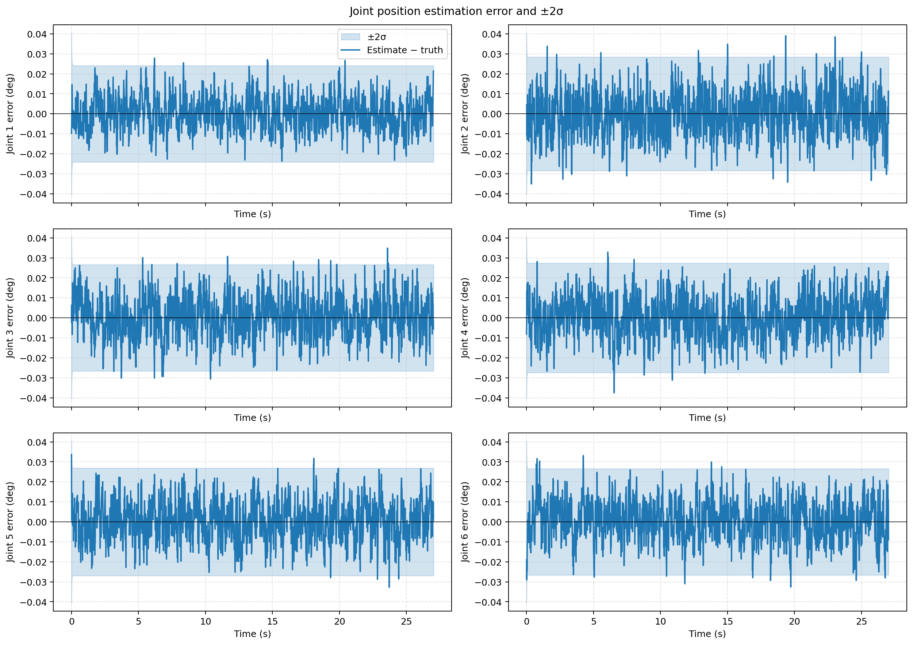
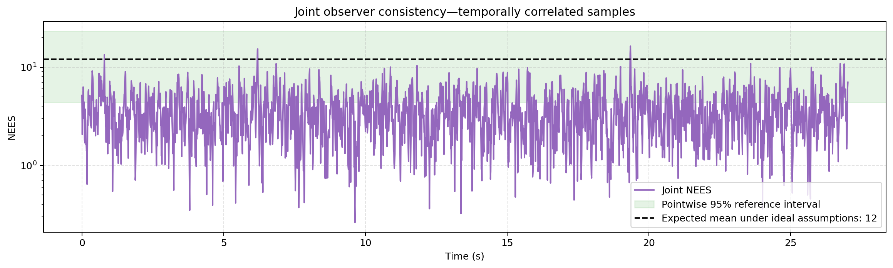
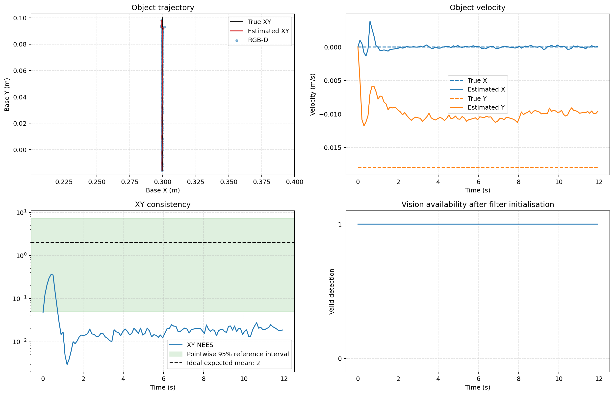
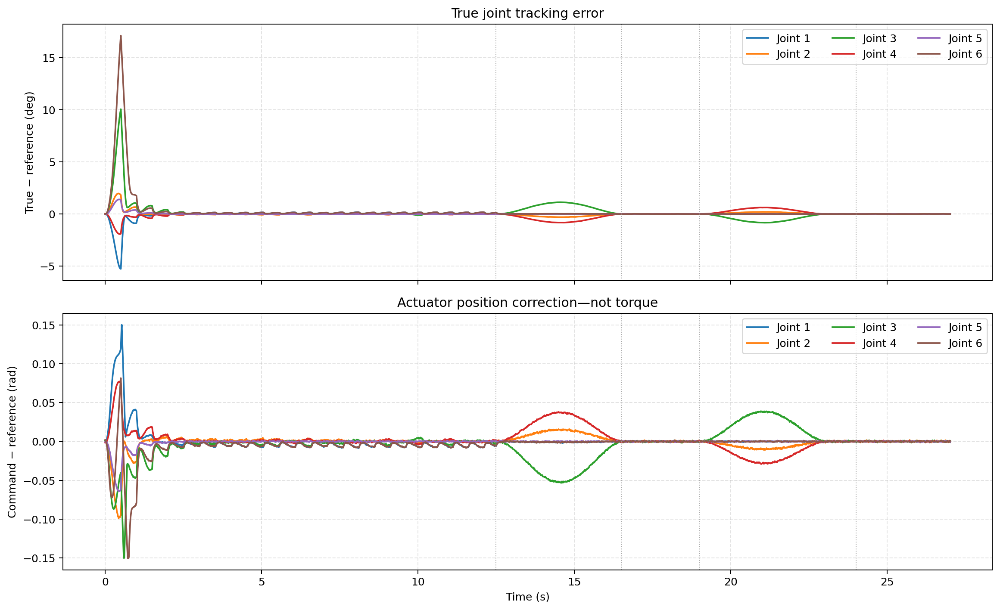

| Member | Contribution |
|---|---|
| Shuban Golkonda | |
| Jaylee Ah Hen | |
| Nicole Paligies | |
| Aaron Valdy |
text here
video embed here
write here
frame stuff here
callibration
The final simulation (calibrated_moving_block_pick.py, which runs
moving_block_pick.py) uses two estimators. A 12-state Kalman filter estimates the joint
angles and the unmeasured joint velocities from the encoders, and a 6-state constant velocity filter
estimates the cube position and velocity from the camera. Planning and control use only these
estimates. Simulator ground truth is read only by the Evaluation class to score each trial.
Model. The filter uses the discrete 12-state joint model described in Part D, with x = [q, q̇]T, dt = 0.01 s and measurement y = q from six encoders:
x(k+1) = A x(k) + B u(k) + w(k), y(k) = C x(k) + v(k), C = [I, 0]
The observability matrix of (A, C) has full rank 12, so the joint velocities are recoverable from the encoder angles alone. The prediction uses the command u that was actually applied after limiting.
Noise covariances.
Update. Each 10 ms step runs the standard predict and correct cycle. The gain is K = P CT(C P CT + R)−1, and the covariance is updated in Joseph form, P = (I − KC) P (I − KC)T + K R KT, then symmetrised to keep P positive definite under rounding.
Measurement. Each depth frame (every 0.1 s) is back-projected with the camera matrix K estimated by the checkerboard calibration (Part B), then transformed into the base frame using the camera pose from forward kinematics at the estimated joint angles. The table plane is fitted with RANSAC, red pixels between 8 mm and 70 mm above the plane are segmented, and the cube centre in x and y is taken from the extent of its visible points. The measured grasp point is placed 37 mm above the fitted table surface, which is 17 mm above the cube centre by design.
Model. The state is x = [px, py, pz, vx, vy, vz]T with a constant velocity model and a direct position measurement:
F = [[I, Δt I], [0, I]], Δt = 0.1 s, H = [I, 0]
Both F and H are linear, so although the class is named an EKF it reduces to a standard linear Kalman filter, with the same gain and Joseph form update as the joint filter. The filter predicts and updates on each frame while the cube moves. When the motion phase ends its velocity estimate is set to zero, and the latest camera measurement is locked as the grasp target.
Results from evaluated_calibrated_pick.py over three trials with different noise seeds
(4 mm depth noise, 1% dropout). Ground truth is read only inside its evaluation class. Cube errors are
scored at each vision frame while the cube moves.
| Quantity | Result |
|---|---|
| Joint angle estimate RMSE | 0.14 to 0.19 mrad |
| Joint velocity estimate RMSE | 3.2 to 3.8 mrad/s |
| Joint angle samples inside ±2σ | 98.9 to 99.7% per joint |
| Joint filter ANEES (expected 12) | 3.53 to 3.57 |
| Cube XY position RMSE, filtered | 0.90 to 1.63 mm |
| Cube XY position RMSE, raw camera measurement | 0.91 to 1.63 mm |
| Cube filter XY ANEES (expected 2) | 0.04 to 0.13 |
| Estimated cube speed in y while moving | about 10 mm/s |
Joint filter consistency. ANEES of about 3.5 against an expected 12 shows the joint filter is underconfident: its covariance is larger than the actual error, which is also why more than 99% of samples lie inside ±2σ. The likely cause is the process noise, since σa = 2 rad/s² overstates the unmodelled acceleration in simulation. Reducing Q would bring ANEES towards 12 and smooth the velocity estimate, at the cost of a slower response to model error such as contact during the grasp.
Cube filter consistency. The cube filter is strongly underconfident, with XY ANEES between 0.04 and 0.13 against an expected 2, because R assumes 6 mm measurement noise while the calibrated camera measurement error is about 1 mm. The filtered and raw position errors are equal to within 0.02 mm, so with this R the filter follows the measurements closely and adds little smoothing. Scaling R by 0.03 (to about 1 mm standard deviation) raised the XY ANEES to 2.9, close to the expected value, while the position RMSE stayed between 1 and 2 mm.
Cube velocity. The estimated cube speed settles near 10 mm/s, which agrees with the cube's actual travel of about 117 mm in 12 s (9.8 mm/s). The evaluation script records the true velocity immediately after the commanded 18 mm/s is applied each step, so its reported velocity error of about 8 mm/s reflects the commanded value rather than the cube's average motion.
Robustness. With depth noise raised to 8 mm the cube was never acquired and the task aborted at 12 s. The likely cause is the 3 mm RANSAC inlier threshold, which is well below this noise level, so the fitted table plane fails the 35% inlier check and every frame is rejected before the filter receives a measurement.



Control is implemented in moving_block_pick.py (launched through calibrated_moving_block_pick.py) in two layers. A task layer turns the
cube estimate into joint-space reference trajectories, and a discrete LQR running at 100 Hz tracks
those references using the joint Kalman filter estimate. The controller acts only on estimated
states, and simulator ground truth is read only by the evaluation logger.
The UR3e joints in the MuJoCo model are driven by position servos with stiffness kp and damping kd taken from the XML actuator parameters. With the arm inertia matrix M evaluated at the initial configuration and gravity compensated separately, the 12-state model is
x = [q, q̇]T, u = commanded joint position (6) A = [[0, I], [−M−1Kp, −M−1Kd]], B = [[0], [M−1Kp]], C = [I, 0]
The model is discretised with a zero-order hold at dt = 0.01 s using cont2discrete. The
controllability and observability matrices both have full rank 12. The open-loop poles form six slow
modes near −5 rad/s and six fast modes between about −170 and −1300 rad/s. Each servo
is heavily overdamped, so its slow pole is close to −kp/kd, which equals
−5 rad/s for every actuator in the XML, and its fast pole is close to −kd/M.
The gain K (6 × 12) is obtained from the discrete algebraic Riccati equation
(solve_discrete_are) with
Q = diag(400 · I6, 1 · I6), R = 0.5 · I6
Position error is weighted 400 times more than velocity error, so the controller prioritises reaching the reference angle, while R limits how far the command departs from the reference. The control law regulates the estimated state about the reference with zero reference velocity:
u = qref − K (x̂ − [qref, 0]T)
The position gains on the diagonal are between 2.76 and 3.19, with coupling terms between joints because M is not diagonal. The largest closed-loop eigenvalue magnitude is 0.818, which corresponds to about −20 rad/s. The LQR therefore makes the dominant modes about four times faster than the open-loop servo response.
The limited command is the one fed back to the joint Kalman filter prediction, so the estimator uses the input that was actually applied.
The cube starts at (0.30, 0.10) m and is commanded to move in the −y direction at 18 mm/s for
12 s, after which it stops. While it moves,
the constant velocity filter described in Part C fuses the camera measurements every 0.1 s. The arm follows the cube with position-based visual servoing (PBVS):
the hover goal is the filter's cube position estimate raised by 10 cm, and a new 0.8 s joint trajectory to that
goal is planned every 0.5 s. Joint goals come from numerical inverse kinematics
(scipy.optimize.least_squares) with a fixed downward gripper orientation, and
trajectories are generated by quintic interpolation (roboticstoolbox.jtraj).
| State | Control behaviour |
|---|---|
| TRACK | Hover 10 cm above the filter's cube estimate and replan every 0.5 s. After the cube stops and 0.5 s has passed, lock the latest camera measurement (no older than 0.3 s) as the grasp target once the arm has settled within 0.025 rad. Abort if the cube is not acquired within 12 s or tracking exceeds 35 s. |
| DESCEND | 4 s descent to the locked grasp target. Advance when the tool is within 8 mm. |
| CLOSE | Close the fingers over 1.5 s, then wait to 2.5 s. |
| LIFT / HOLD | Lift 8 cm over 4 s, then hold. |
Each plan is rejected if any joint would move more than 1.5 rad, which prevents IK branch jumps, or if sampled configurations along the path intersect the table. A rejected plan, a timeout or a lost target moves the task to ABORT, which holds the estimated current position.
Three trials with different noise seeds all completed the pick. Because the task timing follows the cube motion schedule, every trial entered DESCEND at 12.5 s and reached HOLD at 24.0 s.
| Tracking RMSE, true angle against reference (mrad) | J1 | J2 | J3 | J4 | J5 | J6 |
|---|---|---|---|---|---|---|
| Whole run | 8.1 | 3.5 to 3.8 | 16.1 to 17.8 | 5.5 to 5.6 | 2.4 | 26.7 to 26.8 |
| After the first 1.5 s | 1.1 to 1.2 | 1.6 | 6.2 to 6.3 | 4.5 to 4.6 | 0.1 | 1.3 |
| TRACK only, after the first 1.5 s | 1.7 to 1.8 | 0.5 to 0.6 | 1.3 to 1.5 | 0.6 to 0.7 | 0.1 | 2.0 |
Start-up transient. The whole-run RMSE is dominated by the first second. The first plan moves the arm from its start pose to the hover point in only 0.8 s, which asks for up to 40° of joint motion at up to 110°/s, faster than the 1.2 rad/s (69°/s) rate limit allows. The peak tracking error reaches about 17° on joint 6 and 11° on joint 3, and the correction reaches the ±0.15 rad offset limit on joints 1, 3 and 6. After 1.5 s the error stays below 1.2° on every joint.
Steady tracking. While following the cube the tracking error is 0.1 to 2.0 mrad. After the transient the largest errors occur on joints 3 and 4 during DESCEND and LIFT, peaking at about 1.1° and 0.8°. These joints carry the arm's weight while the reference moves, and the control law assumes zero reference velocity, so the arm lags a moving reference. Adding the trajectory velocity as a feedforward term would reduce this lag. Except for joint 5, the tracking error exceeds the joint angle estimation error (0.14 to 0.19 mrad) by a factor of about 3 to 45, so tracking is limited by the controller rather than by the estimator.
Limitations. The hover goal uses the estimated position only, so the arm lags the cube by the replanning interval; the estimated velocity could be used to lead the target. The end of the cube motion is taken from the known schedule rather than detected from the estimated velocity. The cube travelled about 117 mm rather than the 216 mm commanded, most likely because its velocity is set once per control step and table friction slows it in between.

Quantitive resulets
The final simulation is in the final_simulation folder of the
GitHub repository.
It uses MuJoCo, NumPy, SciPy, OpenCV, Open3D, Matplotlib and the Robotics Toolbox for Python, and was
tested with Python 3.13.
| Folder | Contents |
|---|---|
final_simulation/ | Final MuJoCo pipeline: camera calibration, moving-block pick and evaluation |
universal_robots_ur3e/ | UR3e scene (ur3e.xml) and mesh assets, shared by all simulations |
hardware/ | Pipeline for the real UR3e, RG2 gripper and RealSense camera, with a mock mode |
test_simulations/ | Earlier development versions, kept for reference |
git clone https://github.com/shubangolkonda123/Sensors_Integrated_Project_SAJN.git cd Sensors_Integrated_Project_SAJN/final_simulation python -m venv .venv .venv\Scripts\activate (Windows) source .venv/bin/activate (Linux) pip install -r pick_requirements.txt
The scripts locate universal_robots_ur3e/ur3e.xml in the parent folder automatically, so
the XML and meshes stay where they are. A different model can be passed with --model.
Command (from final_simulation/) | What it does |
|---|---|
python evaluated_calibrated_pick.py --seed 1 | Calibrates the camera, runs the pick, then scores it against ground truth and produces the figures. This is the command used for the results on this page. |
python calibrated_moving_block_pick.py --seed 1 | Calibrates the camera and runs the pick without the evaluation figures. |
python calibrated_moving_block_pick.py --calibration-only | Runs the checkerboard calibration only. |
python evaluated_calibrated_pick.py --seed 1 --depth-noise 0.008 | Raises the simulated depth noise to 8 mm. --dropout 0.10 sets the depth dropout probability. |
python evaluated_calibrated_pick.py --seed 1 --block-r-scale 0.03 | Scales the cube filter's measurement covariance R. --block-q-scale scales its process covariance Q. Neither changes the simulated sensor noise. |
python evaluated_calibrated_pick.py --seed 1 --no-show | Saves the figures without opening them. |
Two windows open during a run: the MuJoCo viewer and the wrist camera image with the detected cube. A run ends 3 s after the arm reaches HOLD, and pressing Q in the camera window stops it early. The calibration runs first, then the pick runs in real time for about 27 s.
results/sim_camera_calibration/: estimated camera matrix (camera_calibration.npz), calibration report and the checkerboard images.results/evaluation_<date>_<time>/: metrics.json, joint_metrics.csv, evaluation_log.npz, timeseries.csv, summary.json and the figures in figures/.
Ground truth. Simulator ground truth for the cube and joints is read only inside the
Evaluation class of moving_block_pick.py and the
DiagnosticEvaluation class of evaluated_calibrated_pick.py. It is never passed to
the detection, estimation, planning or control code.
| Member | Contribution |
|---|---|
| Shuban Golkonda | |
| Jaylee Ah Hen | |
| Nicole Paligies | |
| Aaron Valdy |
Tools used and the purpose of each.
41014 tutorials, MuJoCo, Robotics Toolbox, ur_rtde, librealsense, OpenCV, SciPy and the MuJoCo Menagerie UR3e model.